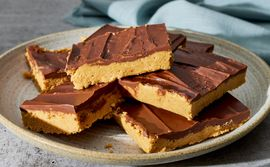

Peanut Butter Bars
Home

These peanut butter bars taste just like peanut butter cups.
Details
- Prep time : 25 min
- Additional time : 1 hr
- Total time : 1 hr 25 min
- Servings : 12
- Yield : 12 bars
Nutritional facts
- Calories : 532
- Fat : 37g
- Carbs : 49g
- Protein : 9g
Why You'll Love This Recipe
- Rich layers of chocolate and peanut butter combine in this delicious, no-bake treat.
- Reviewers rave that these 6-ingredient bars taste "just like a Reese's."
- "This is the best candy recipe I have ever tried," says Allrecipes member CAMPPJPATTY.
Ingredients
- 2 cups graham cracker crumbs
- 2 cups confectioners' sugar
- 1 cup butter or margarine, melted
- 1 cup peanut butter
- 1 ½ cups semisweet chocolate chips
- 4 tablespoons peanut butter
Steps
- Gather all ingredients.
- Mix together graham cracker crumbs, confectioners' sugar, butter or margarine, and 1 cup peanut butter in a medium bowl until well-blended.
- Press evenly into the bottom of an ungreased 9x13-inch pan.
- Place chocolate chips and 4 tablespoons peanut butter in a microwave-safe bowl. Microwave on high, stirring every 15 seconds, until smooth.
- Spread mixture over crust.
- Refrigerate for at least 1 hour before cutting into 12 squares.
Your recipe is completed and your dish is ready. Enjoy this delicious meal and share it with your friends and family.